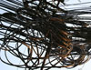
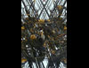

The Open Gallery
click thumbnail for full size image "Sasha Meret was born in Romania in 1955, of Romanian and Russian parents. He started to study art at an early age, and earned a BA in 1974, and an MA in 1979. After his arrival in New York, he studied printmaking with Tony Harrison at Columbia University. He currently lives and works in New York City, and he had exhibits in Europe, Japan, China and the U.S. His work encompasses a wide range of techniques and styles. He combines painting, drawing, photography, printmaking with digital art and works in a variety of styles, from representational to abstract. His imagery reflects his spiritual explorations, blending European, African, Asian, and esoteric symbolism in a highly personal visual language. He alternates figuration with abstraction in search for a balance between ideas and emotions. With his fine art training, Sasha Meret brings a fresh and unusual angle to his photography. His focus on detail and composition introduces a persistent sense of mystery even in places where one would not expect to find it. His bold incursion into the intimate world of textures makes viewing his photographs and digital art an almost tactile experience. His work is evading the so called "tyranny-of-photography" and the assumption that the camera depicts things as they are. The ambiguity and innuendo become his allies in capturing the viewers interest."
Sasha Meret

